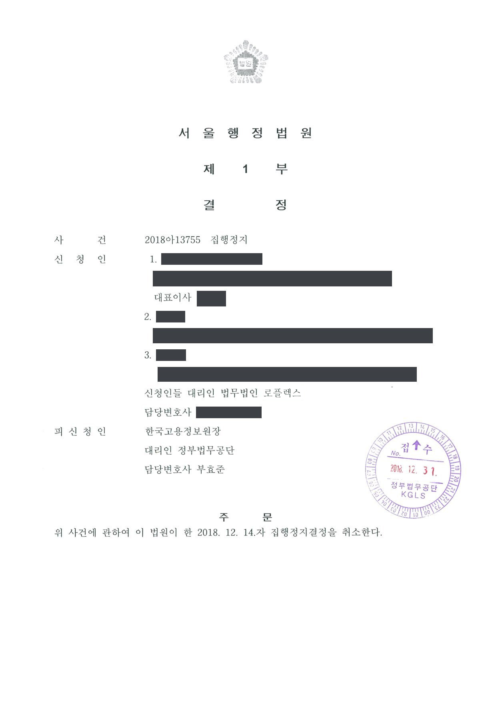

입찰참가자격제한처분 취소소송 (항소심) 및 집행정지
서울행정법원 2018구합87606 · 서울고등법원 2021누43417 · 서울행정법원 2018아13755 · 담당변호사 부효준
판결문


사건의 요지
공공기관 입찰에서 허위 서류 제출을 이유로 법인과 임직원에게 내려진 입찰참가자격제한처분의 처분사유와 기간의 적정성이 다투어진 사건입니다. 제1심 계속 중 원고들이 받은 집행정지결정은 처분청의 장을 상대로 한 신청으로서 피신청인적격이 없어 부적법하다는 이유로 취소되었습니다.
사건의 주요 내용
공공기관이 발주한 입찰에서 허위 서류를 제출하였다는 이유로, 처분청(공공기관)은 입찰에 참가한 법인과 그 임직원들에게 입찰참가자격제한처분을 하였습니다. 원고들은 처분사유가 인정되지 않고 제한기간도 과도하다고 다투며 서울행정법원에 처분 취소소송을 제기하였고, 제1심 계속 중 집행정지 인용결정도 받았습니다.
제1심은 원고들의 청구를 일부 받아들였고, 처분청은 패소한 부분에 대하여 항소하였습니다. 부효준 변호사는 개업 직후 항소심부터 처분청을 대리하였으며, 서울고등법원은 2022년 1월 제1심판결 중 처분청 패소 부분을 취소하고 원고들의 청구를 모두 받아들이지 않았습니다. 아울러 제1심 계속 중 원고들이 받았던 집행정지 인용결정에 대하여 처분청이 즉시항고하여 그 결정이 취소되었습니다.
원고의 주장
- 입찰 과정에서 허위 서류를 제출하였다는 처분사유가 인정되지 않는다고 주장하였습니다.
- 설령 처분사유가 인정되더라도 법인과 임직원에게 정한 입찰참가자격제한 기간이 지나치게 길어 부당하다고 주장하였습니다.
부효준 변호사의 주장
- 항소심에서 허위 서류 제출이라는 처분사유가 인정되고 법인과 임직원에 대한 제한기간도 적정하다는 점을 다투어, 처분청이 일부 패소한 제1심판결의 결론을 바꾸고자 하였습니다.
- 제1심 계속 중 원고들이 받은 집행정지 인용결정에 대하여는, 그 신청이 처분을 한 공공기관이 아니라 그 기관의 장을 상대로 한 것이어서 피신청인적격이 없는 자를 상대로 한 부적법한 신청이라고 주장하며 즉시항고하였습니다.
법원의 판단
항소심(서울고등법원)은 2022년 1월 제1심판결 중 처분청 패소 부분을 취소하고 원고들의 청구를 모두 받아들이지 않아, 법인과 임직원에 대한 입찰참가자격제한처분이 모두 적법하다고 판단하였습니다. 제1심에서 일부 취소되었던 처분이 항소심에서 전부 유지된 것입니다.
또한 제1심 계속 중 원고들이 받았던 집행정지 인용결정은, 처분청이 즉시항고하자 결정을 한 법원이 재도의 고안으로 이를 취소하였습니다. 처분청의 장을 상대로 한 신청은 피신청인적격이 없는 자를 상대로 한 것으로서 부적법하다는 이유였습니다.
이 사건이 보여 주는 것
공공기관의 입찰참가자격제한처분을 다툴 때에는 처분을 한 주체가 기관의 장인지 법인인 기관 자체인지를 확인하여 피고와 피신청인을 정확히 지정해야 합니다. 상대방을 잘못 지정한 집행정지 신청은 인용결정을 받았더라도 즉시항고 단계에서 재도의 고안으로 취소될 수 있습니다.
처분청 입장에서는 제1심에서 일부 패소하였더라도 항소심에서 처분사유와 제한기간의 적정성을 다시 다투어 결론이 바뀔 수 있다는 점을 보여 주는 사례입니다.
비슷한 처분을 받으셨다면
행정처분은 처분이 있음을 안 날부터 90일 이내에 행정심판이나 취소소송으로 다투어야 하고, 기간이 지나면 돌이킬 수 없는 처분은 집행정지를 서둘러야 합니다. 처분서를 받은 날짜부터 확인해 드립니다.